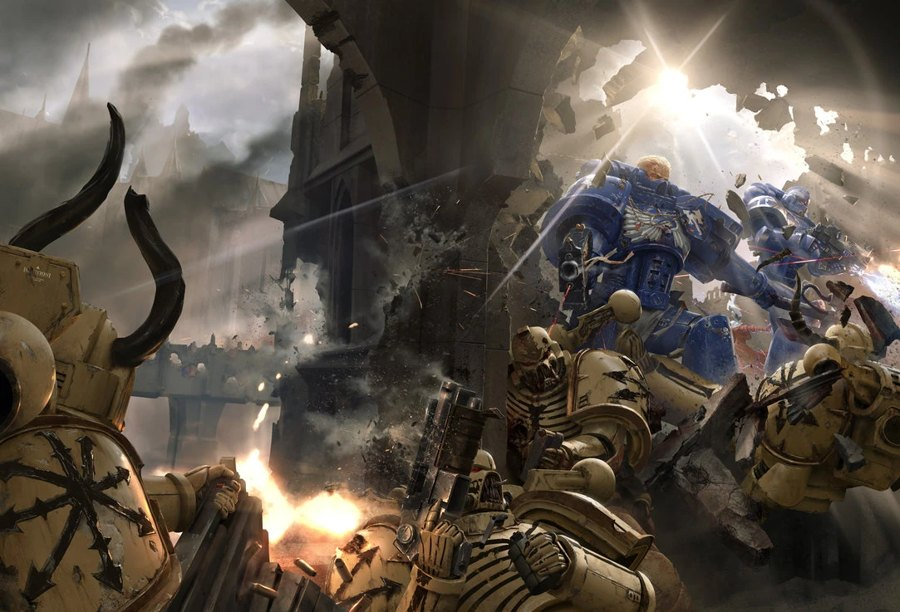

Dark Hunters
| Dark Hunters | |
|---|---|
| Loyalist Space Marine Chapter of the Adeptus Astartes | |
The Axe of Justice Artwork © Games Workshop | |
| Founded | c. 560.M37 (estimated), 37th millennium[a] |
| Successor of | White Scars (Jaghatai Khan) |
| Founding Chapter Master | Angnar |
| Chapter Master | Kharne Al Murzim |
| Homeworld | Phobian, a night world |
| Fortress-monastery | Mors Angnar |
| Allegiance | Imperium of Mankind |
| Colours | Dark blue and white |
| Battle cry | Umbra Sumus ("We are shadows") |
| Size | 600 Space Marines |
| Notable battles | |
| Battle of Bloodsteel; Battle for Phobian (936.M38); Punisher Wars (825.M41, 982.M41); Lonal Ambush (996.M41) | |
The Dark Hunters are a loyalist Space Marine Chapter of the Codex Astartes, descended from the gene-seed of the White Scars. They come from the night world of Phobian and are grim, resolute warriors, known as hunters of the renegade warband the Punishers. Their reputation rests on the Dellrond Campaign, in which a single Battle Company held the entrance to the Cathedral of the Emperor Ossified for five Terran years against the Orks of the Waaagh of Nagrut.[1][2]
History
[edit]Founding
[edit]The Chapter was founded in the 37th millennium, in the Occlusiad War of 555–565.M37, to fight the heretic Tech-priests of the Adeptus Mechanicus who called themselves the Apostles of the Blind King. Captain Angnar and his company of ninety-eight White Scars were chosen as its core, and Angnar became first Chapter Master. At the White Scars' fortress-monastery of Quan Zhou on Chogoris, Mordonai Khan gave him a relic double-headed power axe said to have been carried by Jaghatai Khan. The Chapter took it as its badge, the Axe of Justice, and changed the White Scars' livery for dark blue.[1][3]
Its first campaign, the Battle of Bloodsteel, was against the Daemon Engines of the Warpsmith Hilghar and the mutated Titan Repellus Maximal. It cost the Chapter heavily and left it with a distrust of machines and strained relations with the Tech-priests of Mars. They also hunt Daemon Engines whatever the cost.[1]
The Blind King and the Punishers
[edit]In 936.M38 the Dark Hunters defended Phobian against the Princeps known as the Blind King and his renegade Titans. Their usual tactics failed against the Titans until Chapter Master Jullunai Khan ordered the Ansar Company to break the hull of the lead Warlord.[4] The Punishers attacked the Kargad System in 825.M41, landing a quarter of a million cultists on Phobian. The Chapter was driven back to its fortress-monastery of Mors Angnar, reduced to two hundred battle-brothers, and was saved only by six other Chapters. In 939.M41 struck the Punishers' stronghold at the Black Star, killing over half of them. In 982.M41 Captain Jonah Kerne held Ras Hanem against the warband with Astra Militarum help. Today the Chapter is one of seven charged with hunting the Punishers.[1][5]

Other campaigns
[edit]In 089.M38 Inquisitor Galleus led Dark Hunters and Cadians against the traitors of Zarona and gave himself to close a warp rift. In 996.M41 the Chapter met Hive Fleet Leviathan on Lonal, where the Raven Guard used them as bait for a trap that killed a dozen Hive Tyrants. Others are the Rusthunt against the Blood Axe tank boss Badfragg on Knarr, and the Siege of Vhot beside the Storm Lords. None of the last three is dated.[6][5]
Organisation
[edit]The Dark Hunters follow the Codex Astartes but depart from it in using honorific titles in place of standard ranks. The Chapter Master bears the title Kharne, and the companies are named. Its fortress-monastery is Mors Angnar, named for the founder.[7][5]
Timeline
[edit]| Date | Event |
|---|---|
| 555–565.M37 | Occlusiad War; Chapter founded from the White Scars (c. 560.M37, estimated) |
| 089.M38 | Zarona Intervention |
| 936.M38 | Battle for Phobian against the Blind King |
| 825.M41 | First Punisher War; Kargad System |
| 939.M41 | Battle of the Black Star |
| 982.M41 | Second Punisher War; Ras Hanem |
| 996.M41 | Lonal Ambush |
See also
[edit]Notes
[edit]- ^ The Chapter was raised during the Occlusiad War (555–565.M37). The sources give no exact year, so c. 560.M37 is estimated.
References
[edit]- ^ a b c d Codex: Space Marines (6th edition, digital edition). Games Workshop. pp. 18, 68, 81, 132, 136, 213.
- ^ Adeptus Astartes: Successor Chapters (limited release booklet). Games Workshop. p. 31.
- ^ First Founding (background book). Games Workshop. p. 81.
- ^ Kearney, Paul. "The Blind King" (short story). Black Library.
- ^ a b c Kearney, Paul. Dark Hunters: Umbra Sumus (novel). Black Library.
- ^ Codex: Space Marines (7th edition, digital edition). Games Workshop. p. 136, "The Rusthunt".
- ^ Codex: Space Marines (9th edition). Games Workshop. p. 70.